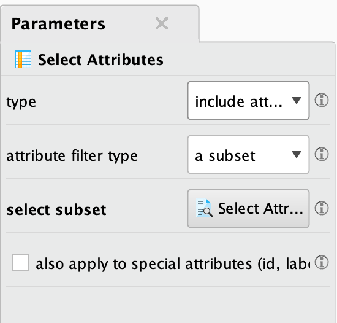
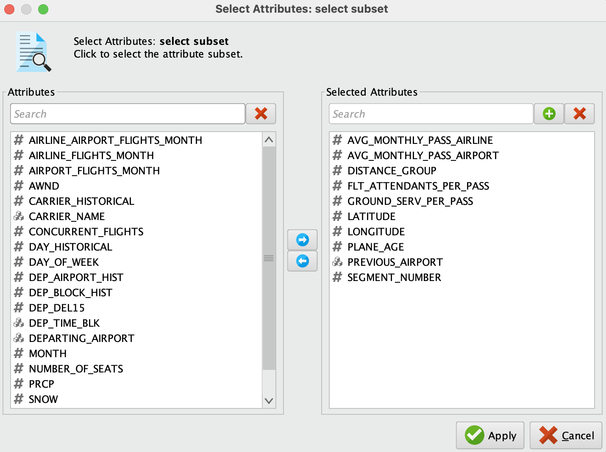
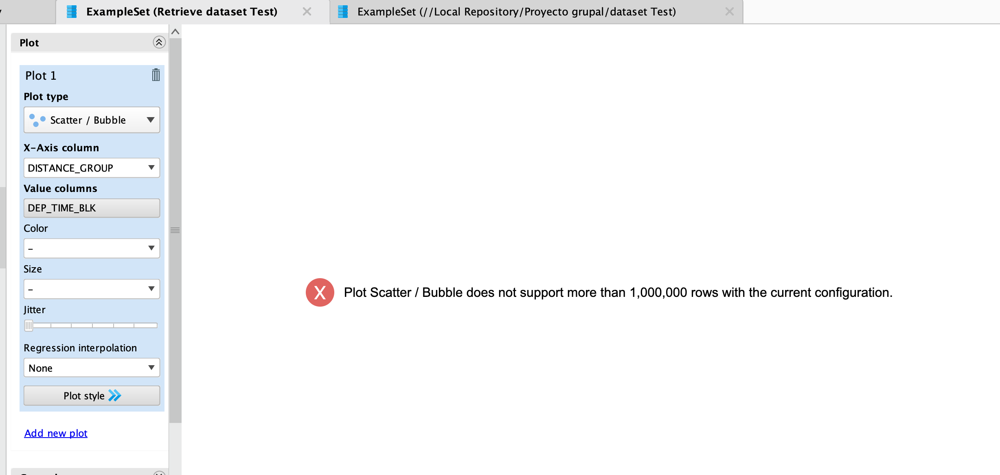
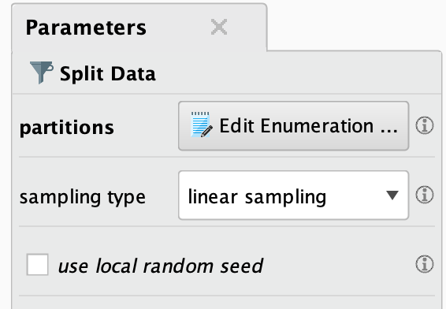
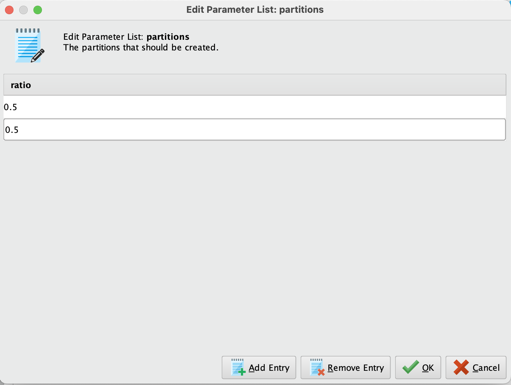
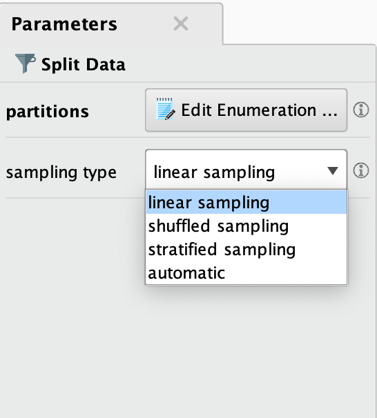
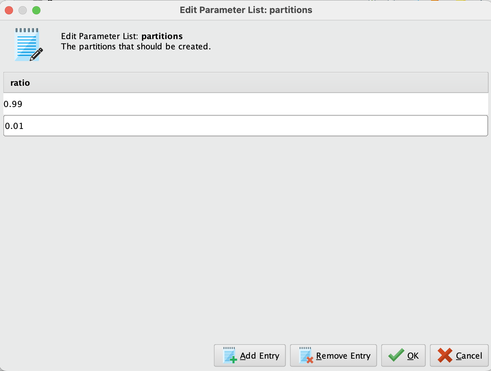
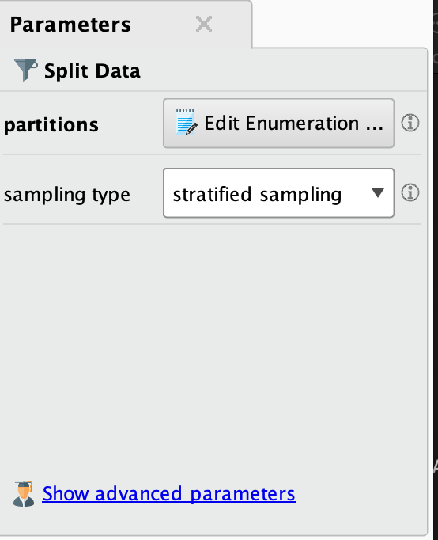

PROYECTO GRUPAL

Introducción al dataset "2019 Airline Delays and Cancellations"
¿Por qué elegimos este dataset?
Elegimos este dataset ya que nos pareció interesante la cantidad de atributos y datos que tenía el dataset, nos generó curiosidad saber cómo limpiar y podar los datos para lograr predecir si un vuelo tiene retraso o se puede cancelar.
Los retrasos y cancelaciones de vuelos afectan diariamente a millones de pasajeros, aerolíneas y aeropuertos. Este dataset permite analizar estos problemas y buscar soluciones basadas en datos.
Es útil para identificar patrones de retrasos y entender los factores que influyen en ellos (por ejemplo, congestión, condiciones climáticas, años de los aviones, etc.)
Nos permite identificar aeropuertos con mayor frecuencia de retrasos y predecir si un vuelo tendrá un retraso significativo (más de 15 minutos) basado en factores históricos y operativos
Este dataset contiene más de 30 columnas y 1.900.000 filas de atributos, de los cuales contienen:
- Características de los vuelos: Horarios, distancias, aerolíneas.
- Factores operativos: Congestión en aeropuertos, capacidad de asientos.
- Condiciones climáticas: Precipitación, viento, nieve, etc.
- Datos históricos: Desempeño de aerolíneas y aeropuertos en situaciones similares.
El análisis de este dataset puede ayudar a mejorar la experiencia del pasajero, optimizar la logística de las aerolíneas y reducir costos relacionados con retrasos y cancelaciones.
Atributos
- MONTH: Mes del vuelo (1-12). Captura cómo los retrasos varían según el mes del año (por ejemplo, meses de vacaciones como diciembre pueden ser importantes para analizar).
- DAY_OF_WEEK: Día de la semana (1 = Lunes, 7 = Domingo). Captura cómo los retrasos varían según el día de la semana.
- DEP_DEL15: Indicador de retraso en la salida mayor o igual a 15 minutos (1 = Sí, 0 = No). Variable objetivo, utilizada para predecir si un vuelo tendrá un retraso significativo.
- DEP_TIME_BLK: Intervalo de tiempo programado para la salida (ejemplo: "0600-0659"). Permite analizar cómo los retrasos varían según la hora del día.
- DISTANCE_GROUP: Grupo de distancia del vuelo (en intervalos, por ejemplo, vuelos cortos o largos). Captura cómo la distancia afecta los retrasos.
- SEGMENT_NUMBER: Número de segmento del vuelo en itinerarios con múltiples trayectos. Útil para analizar vuelos conectados.
- Factores relacionados con las operaciones de vuelo
- CONCURRENT_FLIGHTS: Número de vuelos concurrentes desde el mismo aeropuerto en el mismo intervalo de tiempo. Puede indicar congestión en el aeropuerto.
- NUMBER_OF_SEATS: Número de asientos en el avión. Relacionado con el tamaño del avión y la logística para abordaje y desembarque.
- CARRIER_NAME: Nombre de la aerolínea que opera el vuelo. Permite analizar el desempeño de diferentes aerolíneas.
- DEPARTING_AIRPORT: Código del aeropuerto de salida. Identifica el aeropuerto de origen del vuelo.
- Estadísticas mensuales
- AIRPORT_FLIGHTS_MONTH: Número de vuelos desde el aeropuerto en el mes. Indica la actividad mensual del aeropuerto.
- AIRLINE_FLIGHTS_MONTH: Número de vuelos operados por la aerolínea en el mes. Relacionado con la capacidad operativa de la aerolínea.
- AIRLINE_AIRPORT_FLIGHTS_MONTH: Número de vuelos de la aerolínea desde el aeropuerto en el mes. Combinación de la aerolínea y el aeropuerto de origen.
- AVG_MONTHLY_PASS_AIRPORT: Promedio mensual de pasajeros en el aeropuerto. Indica la actividad general del aeropuerto.
- AVG_MONTHLY_PASS_AIRLINE: Promedio mensual de pasajeros transportados por la aerolínea. Indica el desempeño general de la aerolínea.
- Recursos humanos y aeronaves
- FLT_ATTENDANTS_PER_PASS: Proporción de asistentes de vuelo por pasajero. Relacionado con la experiencia de los pasajeros y el servicio a bordo.
- GROUND_SERV_PER_PASS: Proporción de personal de servicio en tierra por pasajero. Relacionado con la eficiencia del servicio en tierra (abordaje, equipaje, etc.).
- PLANE_AGE: Edad del avión. Un avión más viejo podría estar asociado con mayor probabilidad de retrasos técnicos.
- Ubicación geográfica
- LATITUDE y LONGITUDE: Coordenadas geográficas del aeropuerto de origen. Ayuda a identificar la ubicación geográfica y sus posibles implicaciones (por ejemplo, clima extremo).
- PREVIOUS_AIRPORT: Aeropuerto anterior antes del vuelo actual. Captura posibles impactos del itinerario anterior en el vuelo actual.
- Factores climáticos
- PRCP: Precipitación (en pulgadas). Clima lluvioso puede contribuir a retrasos.
- SNOW: Cantidad de nieve (en pulgadas). Indicador de condiciones invernales adversas.
- SNWD: Profundidad de nieve acumulada (en pulgadas). Similar a SNOW, pero puede representar acumulaciones previas.
- TMAX: Temperatura máxima registrada (en Fahrenheit). Puede indicar condiciones de calor extremo.
- AWND: Velocidad promedio del viento (en mph). Vientos fuertes pueden afectar los despegues y aterrizajes.
- Datos históricos y de bloques
- CARRIER_HISTORICAL: Información histórica sobre el desempeño de la aerolínea en vuelos anteriores. Indica la probabilidad histórica de retrasos para la aerolínea.
- DEP_AIRPORT_HIST: Desempeño histórico del aeropuerto de salida. Captura cuántos retrasos suelen ocurrir en el aeropuerto.
- DAY_HISTORICAL: Información histórica sobre retrasos para ese día del mes o día de la semana. Útil para capturar patrones estacionales.
- DEP_BLOCK_HIST: Desempeño histórico del bloque horario de salida. Ayuda a entender qué bloques horarios suelen ser más problemáticos.
En base a estos atributos, podremos predecir y analizar la variable objetivo DEP_DEL15
Limitaciones o aspectos a tener en cuenta del dataset
El dataset está limitado a vuelos en Estados Unidos en 2019, lo que puede no ser representativo de patrones globales.
A pesar de tener muchos atributos en nuestro dataset, hay que tener en cuenta los valores faltantes, outliers y valores que se consideran innecesarios o pocos importantes para el desarrollo de esta investigación.
Limpieza de datos
Primero haremos una limpieza manual de algunas columnas de atributos, las cuales consideramos que no son tan significativas o importantes como otros atributos. Eliminaremos las siguientes columnas:
- LATITUDE y LONGITUDE: Aunque interesantes, son redundantes con los códigos de aeropuerto (DEPARTING_AIRPORT) y no añaden información adicional significativa.
- PREVIOUS_AIRPORT: Puede ser relevante solo en vuelos conectados, pero es difícil usarlo consistentemente en todos los vuelos.
- SEGMENT_NUMBER: Solo útil en vuelos de múltiples segmentos, que pueden ser una minoría.
- AVG_MONTHLY_PASS_AIRPORT y AVG_MONTHLY_PASS_AIRLINE: Son indirectamente redundantes con AIRPORT_FLIGHTS_MONTH y AIRLINE_FLIGHTS_MONTH.
- GROUND_SERV_PER_PASS y FLT_ATTENDANTS_PER_PASS: Aunque pueden ser indicadores indirectos de servicio, probablemente no sean relevantes para retrasos.
- PLANE_AGE: Aunque puede haber un impacto, es menos relevante que factores como congestión o clima.
- DISTANCE_GROUP: Aunque puede ser útil en vuelos muy largos o cortos, su relación con retrasos no siempre es directa.
Select Attributes
Para seleccionar o filtrar estos atributos del dataset, vamos a utilizar el operador "select attributes" el cual nos permite seleccionar las columnas que necesitamos.
Tenemos distintos parámetros para este operador.
Type
Este parámetro sirve para saber si los atributos que seleccionaremos serán incluidos o excluidos de nuestro dataset.
Tenemos dos opciones, "Include attributes" solo se mantendrán los atributos especificados. Todas las demás columnas serán filtradas. La segunda opción es "Exclude attributes" el cual elimina los atributos especificados y mantiene todas las demás columnas.
En nuestro caso, utilizaremos "Exclude attributes", ya que nos permite filtrar las columnas que no necesitamos, utilizamos este método ya que las columnas a eliminar son pocas.
Attribute Filter Type
Básicamente define cómo se seleccionarán los atributos que serán incluidos o excluidos, dependiendo de lo configurado en Type
Por ejemplo, podemos seleccionar todos los atributos con el método "All", con el método "Single" podemos seleccionar un solo atributo, con el método "Subset" seleccionamos un conjunto de datos, entre otros.
En esta ocasión, utilizaremos "Subset" ya que nos permite seleccionar una lista de atributos (en este caso es una lista la cual queremos eliminar dichos atributos).
Select subset
En este parámetro, seleccionamos la lista que necesitamos eliminar o filtrar.
Also Apply to Special Attributes
Este parámetro indica si los filtros también deben aplicarse a los atributos especiales, por ejemplo, ID, variable objetivo, etc.
En nuestro caso decidimos no seleccionar este parametro, ya que no debemos filtrar columnas de con atributos especiales.
Split data
También, debemos reducir la cantidad de filas del dataset, ya que en rapidminer podemos tener algunos problemas con la cantidad de filas, por ejemplo, al querer visualizar una gráfica, Rapidminer no genera gráficos con más de 1 millón de filas.
Para solucionar el problema mencionado anteriormente en Rapidminer, no es necesario eliminar filas, simplemente utilizamos un split para dividir el dataset.
Este operador funciona para dividir nuestro dataset en diferentes particiones. Para esto tenemos distintos parámetros para modificar el "Split data".
En el parámetro "partitions" podemos definir las particiones que necesitamos, por ejemplo, si queremos dividir el dataset a la mitad, lo hacemos de la siguiente manera:
Simplemente colocamos la proporción del dataset que queremos dividir. En caso de querer dividir el dataset en 70/30, debemos ingresar "0,7" (para la primer partición) y "0,3" (para la segunda partición).
Luego, tenemos el parámetro "Sampling type", el cual tiene diferentes opciones.
Linear sampling
Esta primera opción realiza la división del dataset de forma secuencial, sin mezclar ni alterar el orden de las filas. Si configuramos la división del dataset como un 70/30, el primer 70% del dataset se dividirá y por otro lado el otro 30%. Esto sirve si necesitamos que los datos estén ordenados en base a como están ingresados en el dataset. Este método puede causar sesgos si el dataset está organizado de una manera no aleatoria.
Shuffled Sampling
Es un método para mezclar las filas del dataset. Esto nos sirve por si queremos evitar sesgos en la distribución de las filas. Ejemplo, si configuramos una división de 70/30, se mezcla el 100% del dataset antes de que se haga la partición.
Stratified Sampling
Divide los datos asegurando que las proporciones de las clases (en problemas de clasificación) se mantengan iguales en los subconjuntos. Si el 70% de las filas pertenece a la Clase A y el 30% a la Clase B, el muestreo garantiza que los conjuntos de entrenamiento y prueba mantengan estas proporciones.
Automatic
RapidMiner selecciona automáticamente el método de muestreo más apropiado en función de los datos. Generalmente, utiliza Shuffled Sampling a menos que detecte la necesidad de preservar un orden. Se recomienda este método en caso de no estar seguro sobre que método utilizar.
| Caso | Sampling Type recomendado |
|---|---|
| Datos con orden cronológico | Linear Sampling |
| Datos balanceados o sin orden | Shuffled Sampling |
| Problemas de clasificación | Stratified Sampling |
| No estás seguro | Automatic |
¿Qué utilizaremos para este caso?
En este caso, nos encontramos con un problema de clasificación, ya que en base a los datos obtenidos por las aerolíneas, debemos generar un modelo que pueda predecir si el vuelo tendrá retraso o no. Por ende, debemos seleccionar el método "Stratified Sampling", ya que sirve para problemas de clasificación como este.
En el parámetro de "Partition" utilizaremos una división de 80/20 por el momento, ya que tenemos muchas filas en nuestro dataset, entonces utilizaremos el 20% del dataset para hacer las pruebas adecuadas. También nos sirve para dividir el dataset en datos de entrenamiento y datos de testing.
 Luego de esta partición, el dataset se divide en dos: el 80% (1,557,375 filas) y el 20% (389,344 filas).
Referencias
Iberdrola. (n.d.). Machine learning: ¿Qué es y cómo funciona? Iberdrola. Recuperado de https://www.iberdrola.com/innovacion/machine-learning-aprendizaje-automatico
Captia. (n.d.). Machine learning: Qué es, cómo funciona y sus aplicaciones. Captia. Recuperado de https://www.captia.es/blog/machine-learning.html
Pure Storage. (n.d.). ¿Qué es el preprocesamiento de datos? Pure Storage. Recuperado de https://www.purestorage.com/es/knowledge/what-is-data-preprocessing.html